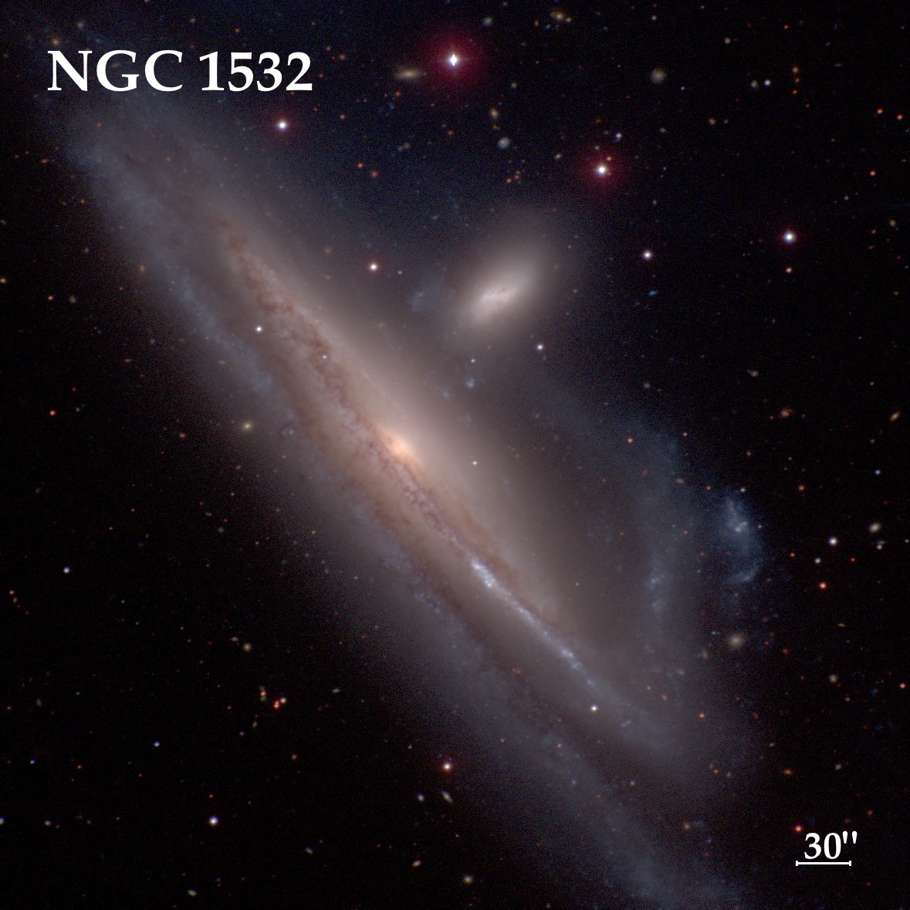

NGC 1532
- Name: NGC 1532 = ESO 359-027 = MCG -05-11-002 = AM 0410-330 = LGG 111-003 = PGC 14638
- RA: 04h 12m 04.3s
- Dec: -32° 52' 29" (2000)
- Constellation: Eridanus
- Type: SB(s)b pec
- Size: 12.6'x3.3'
- Magnitudes: 9.9V, 10.7B
- Surf Br: 13.8 mag/arcmin²
James Dunlop discovered this beauty on 29 Oct 1826 with his 9-inch f/12 speculum reflector. He described "an extremely faint ill-defined nebula, rather elongated in the direction of the meridian [N-S], gradually a little brighter towards the centre." His notes mention it is situated southwest of a pretty bright star, which is mag 7.0 HD 26799.
John Herschel observed this showpiece spiral on 3 different sweeps with his 18" reflector in South Africa. On his first observation (19 Oct 1835) he called it "Bright, very large, very much elongated, 5' long; A fine and curious object. The following and brighter of two [with NGC 1531]. In the ray is either a very faint star or a knot in the nebula."
The galaxy has hosted two supernovae. Type II SN 1981A was the first of many supernovae discoveries by the great visual observer Rev. Robert Evans. SN 2016iae was a type Ic supernova discovered on 7 Nov 2016, which I viewed three weeks later.
This image is from the Carnegie-Irvine Survey. The notes mention "The unusual plumes in NGC 1532 suggest a tidal distortion due to an encounter. The evident candidate responsible for the perturbation is the amorphous companion NGC 1531, whose morphology is of the same class as M82. The two galaxies form a physical pair"
About a year ago in my 14.5", I logged NGC 1532 as a "bright, very large edge-on 5:1 SW-NE, ~6'x1.2', forming an impressive pair with NGC 1531. Contains a very bright core that increases towards the center.".
The view through Jimi Lowrey's 48" was spectacular --
This showpiece edge-on stretched 7'x1.2', tilting SW-NE. The galaxy is sharply concentrated with a large, elongated, very bright core that was mottled and increased to the center. The rest of the galaxy was knotty, streaky and mottled. A striking dust lane runs along the major axis, slicing the galaxy asymmetrically into two parts to the south of the core. The dust lane expands to a larger, elongated (dark) patch on the NE side of the core. The section to the south of the dust lane is much thinner and brightens to a prominent, very bright knotty 1.5' streak on the SW end [this is the brightest part of a tidal tail extending towards NGC 1531]. A very faint star (B = 18.2) is close to the southwest tip of the bright streak. The fainter strip of the galaxy south of the dust lane near the core appears patchy, probably due to dust and star-forming knots. Just northwest of the core is NGC 1531, a bright elliptical that angles perpendicular to the core and forms a striking pair.
As always,
"Give it a go and let us know!
Good luck and great viewing!"
